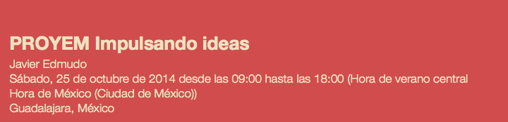

13-17 oct
Change Maker Week
Tecnológico de Monterrey, GDLChange Maker Week
Changemaker Week es la fiesta de innovación y emprendimiento social en el Campus. Es un espacio donde los actores de la universidad se reconocen como agentes de cambio. Los agentes de cambio se fortalecen y encuentran a sus iguales. La comunidad universitaria tiene la oportunidad de acercarse a las problematicas sociales, compartir puntos de vista y descubrir herramientas para la trasformación social.
14 oct
Campus Night - Creativity Edition
Centro de Cultura Digital, DFCampus Night - Creativity Edition
Campus Party, el acontecimiento de Internet más importante del mundo en las áreas de Innovación, Creatividad, Ciencia, Emprendimiento, Ocio y Cultura Digital, trae para ti Campus Night, el primer evento mensual dentro del Centro de Cultura Digital en el Distrito Federal. Campus Night surgió como la propuesta que retorna la presencia de Campus Party en el Distrito Federal. Tendrá lugar de forma mensual en ediciones temáticas (Creatividad, Emprendimiento, Desarrrolladores y Makers
14 oct
TEDxZapopan 2014
Tecnológico de Monterrey, GDLTEDxZapopan 2014
El propósito de TEDxZapopan 2014 es identificar las mejores prácticas para crear transformaciones “imposibles”, reunir a los agentes de cambio de nuestra comunidad e impulsar proyectos de cambio a nivel personal, empresarial, institucional y sociedad.
14 oct
H/F UX Sesión 3
Hacker GarageH/F UX Sesión 3
Que es importante contemplar en la construcción de nuestro producto para provocar en nuestros usuarios mejores experiencias.
14 oct
Taller jurídico para emprendedores
Impact Hub México DF Taller jurídico para emprendedores
Acompáñanos a conocer algunos de los aspectos jurídicos más importantes para desarrollar tu negocio. Tocaremos los siguientes temas: 1.-El comerciante y sus obligaciones. (Se trata de revisar quién es comerciante, qué implica ello y cuáles son sus principales obligaciones, incluyendo las fiscales). 2.- La estructura legal de los negocios: sociedades, asociaciones en participación, joint ventures, etc. 3.- La inversión extranjera. 4.- La protección del negocio (propiedad industrial y derechos de autor). 5.- Las relaciones con la autoridad: permisos, licencias y autorizaciones. Medios de defensa.
15 oct
Epic Queen Chapter 3
Tecnológico de Monterrey, GDLEpic Queen Chapter 3
¡Ya viene la tercera edición de Epic Queen Chapter Guadalajara! La cita es este 15 de octubre en el TEC de Monterrey Campus Guadalajara (en el Edificio del Parque Tecnológico, 3er piso); en el marco del Changemaker Week y, para conmemorar, el tema de esta reunión será enfocado a proyectos de emprendimiento y tecnología con impacto social.
16 oct
Ruby GDL
Hacker Garage, GDLRuby GDL
RubyGDL presenta un panel para explorar diferentes maneras de construir software basadas en experiencias reales. No importa tu nivel de programación, experiencia, edad o lenguaje.
16 oct
Social Valley
Tecnológico de Monterrey, GDLSocial Valley
¡El tercer encuentro de la comunidad más grande de Emprendimiento e Innovación Social de Guadalajara! En el mes de octubre tendremos una edición especial, fruto de una alianza con Changemaker Week, Fuck up Night Gdl y Food Funding por el Día Internacional de la Alimentación.
16 oct
Segundo Encuentro de Gobierno Abierto CDMX
Centro de Cultura DigitalSegundo Encuentro de Gobierno Abierto CDMX
La Plataforma de Gobierno Abierto de la Ciudad de México (PGA CDMX) es un grupo de trabajo interinstitucional que promueve un modelo de ciudad abierta para el Distrito Federal. En este esfuerzo convergen diversas entidades del Gobierno del Distrito Federal como la Oficialía Mayor, la Secretaría de Ciencia, Tecnología e Innovación, la Contraloría General del Distrito Federal y el Laboratorio para la Ciudad. Los procesos de esta plataforma son facilitados por PIDES: Innovación Social A.C.
17 oct
Seedstars Mexico City
Centraal, DFSeedstars Mexico City
Seedstars World (SSW) will return to Mexico on October 17th 2014, continuing on its journey to emerging markets and fast-growing startup scenes.
18 oct
Taller de Levantamiento de Capital
COPARMEX JaliscoTaller de Levantamiento de Capital
Esta es una gran oportunidad para ti si buscas financiar tu proyecto. Tiene como objetivo informar a los emprendedores sobre los diferentes tipos de capital disponibles en México para financiar sus proyectos, así como enseñarles a usar innovadoras herramientas para validar y plasmar sus ideas de negocios.
18 oct
#CANTERA: Taller de Social Ads
Impact Hub México DF #CANTERA: Taller de Social Ads
Al finalizar, los participantes conocerán las herramientas de gestión, planeación y ejecución de campañas pautadas en medios sociales: Facebook, Twitter y YouTube. ¿Cómo funciona cada uno? ¿Qué beneficios tiene usar este tipo de anuncios? ¿Cómo diseño un anuncio y un público objetivo adecuado a mi estrategia y negocio? ¿Cómo mido si tuvo éxito y qué información valiosa adicional puedo obtener de una campaña?
20 oct
Openstack GDL: Hacking Keystone
Hacker Garage, GDLOpenstack GDL: Hacking Keystone
Keystone es el Servicio de Identidad de OpenStack, mediante el cual se ofrece servicios de autenticación y autorización de usuarios y/o grupo de usuarios. Esta sesión tiene como objetivo el de conocer sus fundamentos, historia e instalación, desde dos perspectivas distintas: operador y desarrollador de la nube. Nota: Altamente recomendable llevar laptop, con VirtualBox/VMware y Vagrant instalados para realizar los laboratorios
21 oct
DEVHR.MX 2014
CENART, DFDEVHR.MX 2014 - IV Foro Internacional del Videojuego
Conferencias, mesas redondas, talleres, exposiciones de arte, conciertos, e-sports y b2b en un ambiente íntimo. Aprendizaje, arte, cultura e industria de videojuegos. Explora los videojuegos en sesiones con ponentes líderes en su ramo, los temas más relevantes y oportunidades de contacto de clase mundial.
23 oct
Programas públicos de financiamiento
Edificio MIND Piso 1, GDLProgramas públicos de financiamiento para el desarrollo tecnológico y la innovación
¿Estas interesado en buscar financiamiento para tus proyectos de desarrollo tecnológico e innovación? Conoce los programas públicos que pueden otorgarte apoyos financieros.
24 oct
Exploraciones para una Megalópolis
Papalote Museo del Niño, DFExploraciones para una Megalópolis 003: Ciudad Conocimiento
La tercera edición de la serie Exploraciones para una Megalópolis será un encuentro para reflexionar sobre las conexiones entre la ciencia y la creatividad en los procesos de la ciudad. Buscamos deconstruir los estereotipos sobre la incompatibilidad de la ciencia y la creatividad, para entenderlas como fuentes de nuevo conocimiento en pro del desarrollo económico, social y cultural de la Ciudad de México. Desde sus respectivos proyectos, los ponentes de Exploraciones para una Megalópolis 003: Ciudad Conocimiento, han impulsado el desarrollo intelectual y creativo de las personas en la construcción de mecanismos para fortalecer las ciudades.
24 oct
Language Cast
Hotel del parque , GDLLanguage and Cultural Exchange, improve your skills!
Are you interested in improving a foreign language, experiencing new culture, and meeting new friends from around the world? If you are, then come and join our Language and Cast MeetUp! Participants will meet in small groups to exchange their language abilities and cultural background. We will ask your availability and the language you are interested in learning when you sign up, then we will arrange a meeting between you and your language partner.
25 oct
Science Hack Day Ciudad de México
Laboratorio para la Ciudad, DFScience Hack Day Ciudad de México
El objetivo de Science Hack Day es mezclar perfiles diversos: expertos, científicos, personas sin experiencia previa, aficionados, estudiantes… Tener la inquietud de producir a través de la ciencia y la tecnología es el único requisito para formar parte. Después de Exploraciones para una Megalópolis 003: Ciudad Conocimiento, en Science Hack Day los participantes formarán equipos multidisciplinarios y se enfocarán en producir resultados novedosos a través de la colaboración.
25 oct
PROYEM Impulsando ideas
Guadalajara
PROYEM Impulsando ideas
PROYEM, te invitamos a nuestro evento de emprendurismo, donde se realizaran conferencias y talleres, co expositores de amplia experiencia, que te ayudaran a complementar y mejorar los proyectos o ideas que tu en lo personal tienes pensado llever acabo. Cotaremos con el apollo de dependencias publicas, como es la Secretaria de economia y BBVA Bancomer, empresas dedicadas a fomentar el emprendurismo como es Zona Emprende Guadalajara y Reto Zapopan. La asistencia a este evento tiene valor curriculas ¿Tienes ideas? ¿Te gustaria emprender? ¡La respuestas las tendras al asistir a nuestro evento!
25 oct
Halloween Night
Hacker Garage, GDL27 oct
Diplomado de Tecnologías Abiertas sobre Microsoft Azure
En líneaDiplomado de Tecnologías Abiertas sobre Microsoft Azure
Microsoft México en conjunto con las comunidades de Androideity, Desarrollo Web, Html 5 Fácil y Comunidad de PHP México, inician un diplomado de tecnologías de OpenSource en línea, donde los expertos del mundo del OpenSource imparten el conocimiento a todos los asistentes sobre cómo integrar integrar y utilizar PHP, Node.JS, MySQL, Hadoop, MongoDB, Linux y Android sobre Microsoft Azure.
29 oct
Startup Grind Mexico City
Centraal, D.FStartup Grind Mexico City
Startup Grind is a global startup community designed to educate, inspire, and connect entrepreneurs. We host monthly events in more than 50 cities and 20 countries featuring successful local founders, innovators, educators and investors who share personal stories and lessons learned on the road to building great companies. Our monthly fireside chat interviews, startup mixers and annual conferences provide ample opportunities to connect with amazing startups and the people behind them, tap into a strong support network, form meaningful connections and gain inspiration for the startup journey ahead.
30 oct
Hackers & Founders
SpeedWagon , GDLHackers & Founders
Hackers / Founders es la comunidad más grande de emprendedores tecnológicos en Guadalajara. Hacemos reuniones mensuales enfocadas en ayudar a los emprendedores a dar el siguiente paso en sus startups. Somos una comunidad tecnológica basada en la pregunta ¿Qué Necesitas? conoce a tus futuros socios, solicita ayuda, aprende y emprende. Nos reunimos el último jueves de cada mes.